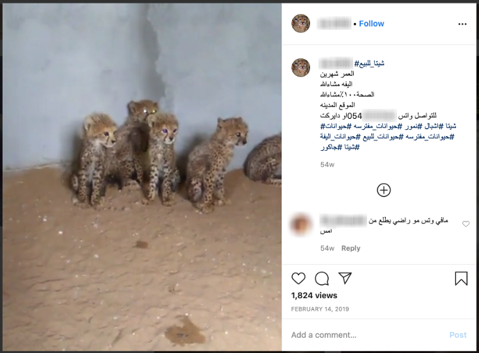

The Backyard Cheetahs of Arabia
More than 3,600 cheetahs were illegally sold from 2010 through 2019. Smugglers traffic most through the Horn of Africa to oil-rich Arabian nations, where cheetahs are commodified as status symbols. Buyers flaunt their animals on Instagram, where the charismatic cats generate thousands of likes and generate demand for the illegal trade. The big cats don't breed well in captivity. Nearly all were plucked as cubs from a declining wild population of around 7,000. This graphic shows cheetahs whose locations could be verified to the municipal level—only a third of the total.